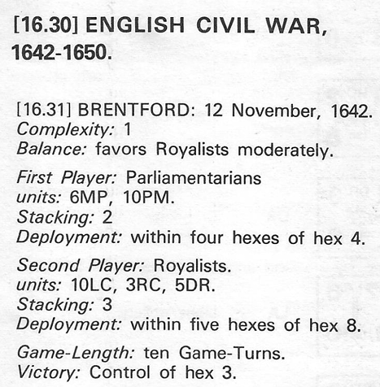
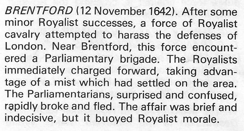

Special Rules:
- No command control, all units have full MF at all times.
- No defensive fire, but still must stop on moving adjacent to fire unit.
- Inf. and Art. either move or fire in a turn, may not do both.
- RC and DR may fire at END of movement, and still melee in the same turn as they fire.
- 'DR' units may dismount (press 'C'). Dismounting/mounting counts as the move for that turn.
